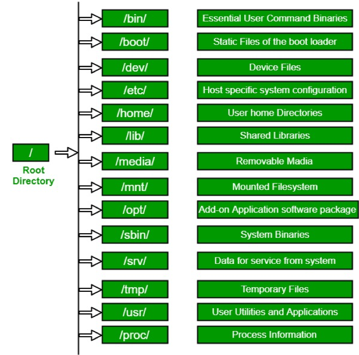
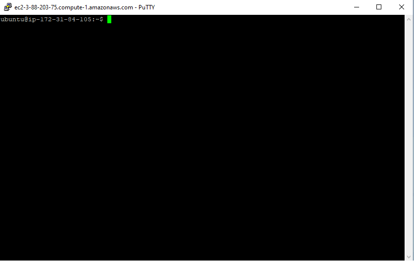
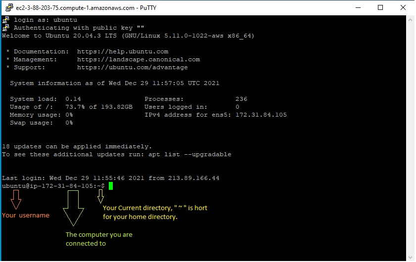

Unix for Bioinformatics¶
Outline:¶
- What is the command line?
- Directory Structure
- Syntax of a Command
- Options of a Command
- Command Line Basics (ls, pwd, Ctrl-C, man, alias, ls -lthra)
- Getting Around (cd)
- Absolute and Relative Paths
- Tab Completion
- History Repeats Itself (history, head, tail, )
- Editing Yourself (Ctrl-A, Ctrl-E, Ctrl-K, Ctrl-W)
- Create and Destroy (echo, cat, rm, rmdir)
- Transferring Files (scp)
- Piping and Redirection (|, >, », cut, sort, grep)
- Compressions and Archives (tar, gzip, gunzip)
- Forced Removal (rm -r)
- BASH Wildcard Characters (?, *, find, environment variables($), quotes/ticks)
- Manipulation of a FASTA file (cp, mv, wc -l/-c)
- Symbolic Links (ln -s)
- STDOUT and STDERR (>1, >2)
- Paste Command (paste, for loops)
- Shell Scripts and File Permissions (chmod, nano, ./)
A Simple Unix cheat sheet¶
What is UNIX?¶
UNIX is an operating system which was first developed in the 1960s, and has been under constant development ever since. By operating system, we mean the suite of programs which make the computer work. It is a stable, multi-user, multi-tasking system for servers, desktops and laptops.
UNIX systems also have a graphical user interface (GUI) similar to Microsoft Windows which provides an easy to use environment. However, knowledge of UNIX is required for operations which aren't covered by a graphical program, or for when there is no windows interface available, for example, in a telnet session.
Types of UNIX¶
There are many different versions of UNIX, although they share common similarities. The most popular varieties of UNIX are Sun Solaris, GNU/Linux, and MacOS X.
Here in the School, we use Solaris on our servers and workstations, and Fedora Linux on the servers and desktop PCs.
The UNIX operating system¶
The UNIX operating system is made up of three parts; the kernel, the shell and the programs.
The kernel¶
The kernel of UNIX is the hub of the operating system: it allocates time and memory to programs and handles the filestore and communications in response to system calls.
As an illustration of the way that the shell and the kernel work together, suppose a user types rm myfile (which has the effect of removing the file myfile). The shell searches the filestore for the file containing the program rm, and then requests the kernel, through system calls, to execute the program rm on myfile. When the process rm myfile has finished running, the shell then returns the UNIX prompt % to the user, indicating that it is waiting for further commands.
The shell¶
The shell acts as an interface between the user and the kernel. When a user logs in, the login program checks the username and password, and then starts another program called the shell. The shell is a command line interpreter (CLI). It interprets the commands the user types in and arranges for them to be carried out. The commands are themselves programs: when they terminate, the shell gives the user another prompt (% on our systems).
The adept user can customise his/her own shell, and users can use different shells on the same machine. This shell is an all-text display (most of the time your mouse doesn’t work) and is accessed using an application called the "terminal" which usually looks like a black window with white letters or a white window with black letters by default.
The tcsh shell has certain features to help the user inputting commands.
Filename Completion - By typing part of the name of a command, filename or directory and pressing the [Tab] key, the tcsh shell will complete the rest of the name automatically. If the shell finds more than one name beginning with those letters you have typed, it will beep, prompting you to type a few more letters before pressing the tab key again.
History - The shell keeps a list of the commands you have typed in. If you need to repeat a command, use the cursor keys to scroll up and down the list or type history for a list of previous commands.
Files and processes¶
Everything in UNIX is either a file or a process.
A process is an executing program identified by a unique PID (process identifier).
A file is a collection of data. They are created by users using text editors, running compilers etc.
Examples of files:
- a document (report, essay etc.)
- the text of a program written in some high-level programming language
- instructions comprehensible directly to the machine and incomprehensible to a casual user, for example, a collection of binary digits (an executable or binary file);
- a directory, containing information about its contents, which may be a mixture of other directories (subdirectories) and ordinary files.
The Directory Structure¶
All the files are grouped together in the directory structure. The file-system is arranged in a hierarchical structure, like an inverted tree. The top of the hierarchy is traditionally called root (written as a slash / )
Absolute path: always starts with ”/” - the root folder
/home/ubuntu/workspace
Relative path: always relative to our current location.
a single dot (.) refers to the current directory two dots (..) refers to the directory one level up
¶
Usually, /home is where the user accounts reside, ie. users’ ‘home’ directories. For example, for a user that has a username of “student#1”: their home directory is /home/student1. It is the directory that a user starts in after starting a new shell or logging into a remote server.
The tilde (~) is a short form of a user’s home directory.
Starting an UNIX terminal¶
¶
After opening or logging into a terminal, system messages are often displayed, followed by the “prompt”. A prompt is a short text message at the start of the command line and ends with a $ in bash shell, commands are typed after the prompt. The prompt typically follows the form username@server:current_directory $ .
If your screen looks like the one below, i.e. your see your a bunch of messages and then your ubuntu student instance number followed by “@172.31.84.105:~$” at the beginning of the line, then you are successfully logged in.

Unix Basics¶
First some basics - how to look at your surroundings
present working directory … where am I?¶
pwd
see the words separated by /. this is called the path. In unix, the location of each folder or file is shown like this.. this is more like the address or the way to find a folder or file.
for example, my Desktop, Documents and Downloads folder usually are located in my home directory so in that case, it path to the folders will be
/home/ubuntu/Desktop
/home/ubuntu/Documents
/home/ubuntu/Downloads
Syntax of a command¶
A command plus the required parameters/arguments The separator used in issuing a command is space, number of spaces does not matter.

Now let's try some basic and simple commands¶
list files here… you should see just the folders that we have created for you here and nothing else.
ls
ls /tmp
TIP!¶
- In unix one of the first things that’s good to know is how to escape once you’ve started something you don’t want. Use Ctrl-c (shows as ‘^C’ in the terminal) to exit (kill) a command. In some cases, a different key sequence is required (Ctrl-d). Note that anything including and after a “#” symbol is ignored, i.e. a comment. So in all the commands below, you do not have to type anything including and past a “#”.
Options¶
Each command can act as a basic tool, or you can add ‘options’ or ‘flags’ that modify the default behavior of the tool. These flags come in the form of ‘-v’ … or, when it’s a more descriptive word, two dashes: ‘--verbose’ … that’s a common (but not universal) one that tells a tool that you want it to give you output with more detail. Sometimes, options require specifying amounts or strings, like ‘-o results.txt’ or ‘--output results.txt’ … or ‘-n 4’ or ‘--numCPUs 4’. Let’s try some, and see what the man page for the ‘list files’ command ‘ls’ is like.
ls -R
Lists directories and files recursively. This will be a very long output, so use Ctrl-C to break out of it. Sometimes you have to press Ctrl-C many times to get the terminal to recognize it. In order to know which options do what, you can use the manual pages. To look up a command in the manual pages type “man” and then the command name. So to look up the options for “ls”, type:
man ls
ls -l /usr/bin/
#long format, gives permission values, owner, group, size, modification time, and name
Exercise:¶
Feel free to see manual pages for these basic commands
Commands and their Meanings
ls
ls -a
mkdir
Now see the difference between these three commands
cd
cd ~
cd .. change to parent directory
Also these commands
ls -l
ls -a
ls -l -a
ls -la
ls -ltrha
ls -ltrha --color

Quick aside: what if I want to use same options repeatedly? and be lazy? You can create a shortcut to another command using ‘alias’.
alias ll='ls -lah'
ll
Getting Around¶
The filesystem you’re working on is like the branching root system of a tree. The top level, right at the root of the tree, is called the ‘root’ directory, specified by ‘/’ … which is the divider for directory addresses, or ‘paths’.
Now let's see a little about the commands you checked in the exercise above.
We move around using the ‘change directory’ command, ‘cd’. The command pwd return the present working directory.
cd # no effect? that's because by itself it sends you home (to ~)
cd / # go to root of tree's root system
cd home # go to where everyone's homes are
pwd
cd username # use your actual home, not "username"
pwd
cd /
pwd
cd ~ # a shortcut to home, from anywhere
pwd
cd . # '.' always means *this* directory
pwd
cd .. # '..' always means *one directory up*
pwd
Absolute and Relative Paths¶
You can think of paths like addresses. You can tell your friend how to go to a particular store from where they are currently (a ‘relative’ path), or from the main Interstate Highway that everyone uses (in this case, the root of the filesystem, ‘/’ … this is an ‘absolute’ path). Both are valid. But absolute paths can’t be confused, because they always start off from the same place, and are unique. Relative paths, on the other hand, could be totally wrong for your friend if you assume they’re somewhere they’re not. With this in mind, let’s try a few more:
cd /usr/bin # let's start in /usr/bin
#relative (start here, take one step up, then down through lib and gcc)
cd ../lib/init/
pwd
#absolute (start at root, take steps)
cd /usr/lib/init/
pwd
Now, because it can be a real pain to type out, or remember these long paths, we need to discuss …
Tab Completion¶
Using tab-completion is a must on the command line. A single <tab> auto-completes file or directory names when there’s only one name that could be completed correctly. If multiple files could satisfy the tab-completion, then nothing will happen after the first <tab>. In this case, press <tab> a second time to list all the possible completing names. Note that if you’ve already made a mistake that means that no files will ever be completed correctly from its current state, then <tab>’s will do nothing.
touch updates the timestamp on a file, here we use it to create three empty files.
cd # go to your home directory
mkdir ~/tmp
cd ~/tmp
touch one seven september
ls o
ls s
tab with no enter completes up to ‘se’ since that’s in common between seven and september. tab again and no enter, this second tab should cause listing of seven and september. type ‘v’ then tab and no enter now it’s unique to seven, and should complete to seven. enter runs ‘ls seven’ command.
It cannot be overstated how useful tab completion is. You should get used to using it constantly. Watch experienced users type and they maniacally hit tab once or twice in between almost every character. You don’t have to go that far, of course, but get used to constantly getting feedback from hitting tab and you will save yourself a huge amount of typing and trying to remember weird directory and filenames.
TIME TO SHIFT GEARS AND PICK UP SOME SPEED NOW!¶
History Repeats Itself¶
Linux remembers everything you’ve done (at least in the current shell session), which allows you to pull steps from your history, potentially modify them, and redo them. This can obviously save a lot of time and typing.
The ‘head’ command views the first 10 (by default) lines of a file. The ‘tail’ commands views the last 10 (by default) lines of a file. Type ‘man head’ or ‘man tail’ to consult their manuals.
<up arrow> # last command
<up> # next-to-last command
<down> # last command, again
<down> # current command, empty or otherwise
history # usually too much for one screen, so ...
history | head # we discuss pipes (the vertical bar) below
history | tail
history | less # use 'q' to exit less
ls -l
pwd
history | tail
!560 # re-executes 560th command (yours will have different numbers; choose the one that recreates your really important result!)
Editing Yourself¶
Here are some more ways to make editing previous commands, or novel commands that you’re building up, easier:
<up><up> # go to some previous command, just to have something to work on
<ctrl-a> # go to the beginning of the line
<ctrl-e> # go to the end of the line
#now use left and right to move to a single word (surrounded by whitespace: spaces or tabs)
<ctrl-k> # delete from here to end of line
<ctrl-w> # delete from here to beginning of preceeding word
blah blah blah<ctrl-w><ctrl-w> # leaves you with only one 'blah'
You can also search your history from the command line:
<ctrl-r>fir # should find most recent command containing 'fir' string: echo 'first' > test.txt
<enter> # to run command
<ctrl-c> # get out of recursive search
<ctr-r> # repeat <ctrl-r> to find successively older string matches
Create and Destroy¶
We already learned one command that will create a file, touch. Now let’s look at create and removing files and directories.
cd # home again
mkdir ~/tmp2
cd ~/tmp2
echo 'Hello, world!' > first.txt
echo text then redirect (‘>’) to a file.
cat first.txt # 'cat' means 'concatenate', or just spit the contents of the file to the screen
why ‘concatenate’? try this:¶
cat first.txt first.txt first.txt > second.txt
cat second.txt
OK, let’s destroy what we just created:
cd ../
rmdir tmp2 # 'rmdir' meands 'remove directory', but this shouldn't work!
rm tmp2/first.txt
rm tmp2/second.txt # clear directory first
rmdir tmp2 # should succeed now
So, ‘mkdir’ and ‘rmdir’ are used to create and destroy (empty) directories. ‘rm’ to remove files. To create a file can be as simple as using ‘echo’ and the ‘>’ (redirection) character to put text into a file. Even simpler is the ‘touch’ command.
mkdir ~/cli
cd ~/cli
touch newFile
ls -ltra # look at the time listed for the file you just created
cat newFile # it's empty!
sleep 60 # go grab some coffee
touch newFile
ls -ltra # same time?
Forced Removal (CAUTION!!!)¶
When you’re on the command line, there’s no ‘Recycle Bin’. Since we’ve expanded a whole directory tree, we need to be able to quickly remove a directory without clearing each subdirectory and using ‘rmdir’.
cd mkdir -p rmtest/dir1/dir2 # the -p option creates all the directories at once rmdir rmtest # gives an error since rmdir can only remove directories that are empty rm -rf rmtest # will remove the directory and EVERYTHING in itHere -r = recursively remove sub-directories, -f means force. Obviously, be careful with ‘rm -rf’, there is no going back, if you delete something with rm, rmdir its gone! There is no Recycle Bin on the Command-Line!
Piping and Redirection¶
Pipes (‘|’) allow commands to hand output to other commands, and redirection characters (‘>’ and ‘»’) allow you to put output into files.
echo 'first' > test.txt
cat test.txt # outputs the contents of the file to the terminal
echo 'second' > test.txt
cat test.txt
echo 'third' >> test.txt
cat test.txt
The ‘>’ character redirects output of a command that would normally go to the screen instead into a specified file. ‘>’ overwrites the file, ‘»’ appends to the file.
The ‘cut’ command pieces of lines from a file line by line. This command cuts characters 1 to 3, from every line, from file ‘test.txt’
cut -c 1-3 test.txt
cat test.txt | cut -c 1-3
cat test.txt | cut -c 1-3 | sort -r
cat test.txt | cut -c 1-3 | sort -r | grep s
This is a great way to build up a set of operations while inspecting the output of each step in turn. We’ll do more of this in a bit.
Compression and Archives¶
As file sizes get large, you’ll often see compressed files, or whole compressed folders. Note that any good bioinformatics software should be able to work with compressed file formats.
gzip test.txt
cat test.txt.gz
gunzip -c test.txt.gz
The ‘-c’ leaves the original file alone, but dumps expanded output to screen
gunzip test.txt.gz # now the file should change back to uncompressed test.txt
Tape archives, or .tar files, are one way to compress entire folders and all contained folders into one file. When they’re further compressed they’re called ‘tarballs’. We can use wget (web get).
wget -L -O PhiX_Illumina_RTA.tar.gz http://igenomes.illumina.com.s3-website-us-east-1.amazonaws.com/PhiX/Illumina/RTA/PhiX_Illumina_RTA.tar.gz
The .tar.gz and .tgz are commonly used extensions for compressed tar files, when gzip compression is used. The application tar is used to uncompress .tar files
tar -xzvf PhiX_Illumina_RTA.tar.gz
Note that, unlike Windows, linux does not depend on file extensions to determine file behavior. So you could name a tarball ‘fish.puppy’ and the extract command above should work just fine. The only thing that should be different is that tab-completion doesn’t work within the ‘tar’ command if it doesn’t see the ‘correct’ file extension.
BASH Wildcard Characters¶
We can use ‘wildcard characters’ when we want to specify or operate on sets of files all at once.
ls ?hiX/Illumina
ls PhiX/Illumina/RTA/Sequence/*/*.fa
find . -name "*.f*"
find . -name "*.f?"
Quick Note About the Quote(s)¶
The quote characters “ and ‘ are different. In general, single quotes preserve the literal meaning of all characters between them. On the other hand, double quotes allow the shell to see what’s between them and make substitutions when appropriate. For example:
VRBL=someText
echo '$VRBL'
echo "$VRBL"
counts the number of lines in file and stores result in the LINES variable¶
LINES=`cat PhiX/Illumina/RTA/Sequence/Bowtie2Index/genome.1.bt2 | wc -l`
echo $LINES
Symbolic Links¶
Since copying or even moving large files (like sequence data) around your filesystem may be impractical, we can use links to reference ‘distant’ files without duplicating the data in the files. Symbolic links are disposable pointers that refer to other files, but behave like the referenced files in commands. I.e., they are essentially ‘Shortcuts’ (to use a Windows term) to a file or directory.
The ‘ln’ command creates a link. You should, by default, always create a symbolic link using the -s option.
ln -s PhiX/Illumina/RTA/Sequence/WholeGenomeFasta/genome.fa .
ls -ltrhaF # notice the symbolic link pointing at its target
grep -c ">" genome.fa
STDOUT & STDERR¶
Programs can write to two separate output streams, ‘standard out’ (STDOUT), and ‘standard error’ (STDERR). The former is generally for direct output of a program, while the latter is supposed to be used for reporting problems. I’ve seen some bioinformatics tools use STDERR to report summary statistics about the output, but this is probably bad practice. Default behavior in a lot of cases is to dump both STDOUT and STDERR to the screen, unless you specify otherwise. In order to nail down what goes where, and record it for posterity:
wc -c genome.fa 1> chars.txt 2> any.err
cat chars.txt
cat any.err
Saving STDOUT is pretty routine (you want your results, yes?), but remember that explicitly saving STDERR is important on a remote server, since you may not directly see the ‘screen’ when you’re running jobs.
The sed command¶
Let’s take a look at the ‘sed’ command. NOTE: On Macs use ‘gsed’. sed (short for stream editor) is a command that allows you to manipulate character data in various ways. One useful thing it can do is substitution. Let’s download a simple file to work on:
wget region.bed -O region.bed
Take a look at the file:
cat region.bed
cat region.bed | sed 's/CHR/chr/'
cat region.bed | sed 's/CHR/chr/g'
cat region.bed | sed 's/chr/chr/gi'
Note that this doesn’t change the file itself, it is simply piping the output of the cat command to sed and outputting to the screen. If you wanted to change the file itself, you could use the “-i” option to sed:
cat region.bed
sed -i 's/chr/chr/gi' region.bed
cat region.bed
sed '4q;d' region.bed
You can also extract a range of lines from a file:
sed -n '10,20p' region.bed
CHALLENGE: See if you can find a way to use sed to remove all the “CHR”s from the file.
More pipes¶
Now, let’s delve into pipes a little more. Pipes are a very powerful way to look at and manipulate complex data using a series of simple programs. Let’s look at some fastq files. Get a few small fastq files:
wget C61.subset.fq.gz -O C61.subset.fq.gz
wget I561.subset.fq.gz -O I561.subset.fq.gz
wget I894.subset.fq.gz -O I894.subset.fq.gz
zcat C61.subset.fq.gz | head
zcat C61.subset.fq.gz | sed -n '1~4p' | head
Now that we have a way to get just the headers, we need to isolate the part of the header that is the barcode. There are multiple ways to do this… we will use the cut command:
zcat C61.subset.fq.gz | sed -n '1~4p' | cut -d: -f10 | head
So we are using the “-d” option to cut with “:” as the argument to that option, meaning that we will be using the delimiter “:” to split the input. Then we use the “-f” option with argument “10”, meaning that we want the 10th field after the split. In this case, that is the barcode.
Finally, as before, we need to sort the data and then use “uniq -c” to count. Then put it all together and run it on the entire dataset (This will take about a minute to run):
zcat C61.subset.fq.gz | sed -n '1~4p' | cut -d: -f10 | sort | uniq -c
Now you have a list of how many reads were categorized into each barcode. Here is a sed tutorial for more exercises.
CHALLENGE: Find the distribution of the first 5 bases of all the reads in C61_S67_L006_R1_001.fq.gz. I.e., count the number of times the first 5 bases of every read occurs across all reads.
Loops¶
Loops are useful for quickly telling the shell to perform one operation after another, in series. For example:
for i in {1..21}; do echo $i >> a; done # put multiple lines of code on one line, each line terminated by ';'
cat a
<1 through 21 on separate lines>¶
The general form is:
for name in {list}; do
commands
done
for i in {3,2,1,liftoff}; do echo $i; done # needs more excitement!
for i in {3,2,1,"liftoff!"}; do echo $i; done # exclamation point will confuse the shell unless quoted
A “while” loop is more convenient than a “for” loop … if you don’t readily know how many iterations of the loop you want:
while {condition}; do
commands
done
Now, let’s do some bioinformatics-y things with loops and pipes. First, let’s write a command to get the nucleotide count of the first 10,000 reads in a file. Use zcat and sed to get only the read lines of a file, and then only take the first 10,000:
zcat C61.subset.fq.gz | sed -n '2~4p' | head -10000 | less
Use grep’s “-o” option to get each nucleotide on a separate line (take a look at the man page for grep to understand how this works):
zcat C61.subset.fq.gz | sed -n '2~4p' | head -10000 | grep -o . | less
Finally, use sort and uniq to get the counts:
zcat C61.subset.fq.gz | sed -n '2~4p' | head -10000 | grep -o . | sort | uniq -c
264012 A
243434 C
215045 G
278 N
277231 T
We just did this for one file, but what if we wanted to do it for all of our files? We certainly don’t want to type the command by hand dozens of times. So we’ll use a while loop. You can pipe a command into a while loop and it will iterate through each line of the input. First, get a listing of all your files:
ls -1 *.fq.gz
Pipe that into a while loop and read in the lines into a variable called “x”. We use “$x” to get the value of the variable in that iteration of the loop:
ls -1 *.fq.gz | while read x; do echo $x is being processed...; done
ls -1 *.fq.gz | while read x; do echo $x is being processed...; zcat $x | sed -n '2~4p' | head -10000 | grep -o . | sort | uniq -c; done
Now, let’s say you wanted to write the output of each command to a separate file. We would redirect the output to a filename, but we need to create a different file name for each command and we want the file name to reflect its contents, i.e. the output file name should be based on the input file name. So we use “parameter expansion”, which is fancy way of saying substitution:
ls -1 *.fq.gz | while read x; do echo $x is being processed...; zcat $x | sed -n '2~4p' | head -10000 | grep -o . | sort | uniq -c > ${x%.fq.gz}.nucl_count.txt; done
This will put the output of the counting command into a file whose name is the prefix of the input file plus “.nucl_count.txt”. It will do this for every input file.
Manipulation of a FASTA File¶
Let’s copy the phiX-174 genome (using the ‘cp’ command) to our current directory so we can play with it:
cp ./PhiX/Illumina/RTA/Sequence/WholeGenomeFasta/genome.fa phix.fa
Similarly we can also use the move command here, but then ./PhiX/Illumina/RTA/Sequence/WholeGenomeFasta/genome.fa will no longer be there:
cp ./PhiX/Illumina/RTA/Sequence/WholeGenomeFasta/genome.fa ./PhiX/Illumina/RTA/Sequence/WholeGenomeFasta/genome2.fa
ls ./PhiX/Illumina/RTA/Sequence/WholeGenomeFasta/
mv ./PhiX/Illumina/RTA/Sequence/WholeGenomeFasta/genome2.fa phix.fa
ls ./PhiX/Illumina/RTA/Sequence/WholeGenomeFasta/
This functionality of mv is why it is used to rename files.
Note how we copied the ‘genome.fa’ file to a different name: ‘phix.fa’
wc -l phix.fa
count the number of lines in the file using ‘wc’ (word count) and parameter ‘-l’ (lines).
We can use the ‘grep’ command to search for matches to patterns. ‘grep’ comes from ‘globally search for a regular expression and print’.
grep -c '>' phix.fa
#Only one FASTA sequence entry, since only one header line (‘>gi|somethingsomething…’)
cat phix.fa
grep --color "ATG......" phix.fa
#’.’ characters are the single-character wildcards for grep. So “ATG……” matches any set of 9 characters that starts with ATG.
#Use the –color ‘-o’ option to only print the pattern matches, one per line
grep -o "ATG......" phix.fa
#Use the ‘cut’ command with ‘-c’ to select characters 4-6, the second codon
grep --color -o "ATG......" phix.fa | cut -c4-6
‘sort’ the second codon sequences (default order is same as ASCII table; see ‘man ascii’)
grep --color -o "ATG......" phix.fa | cut -c4-6 | sort
#Combine successive identical sequences, but count them using the ‘uniq’ command with the ‘-c’ option
grep --color -o "ATG......" phix.fa | cut -c4-6 | sort | uniq -c
#Finally sort using reverse numeric order (‘-rn’)
grep --color -o "ATG......" phix.fa | cut -c4-6 | sort | uniq -c | sort -rn
… which gives us the most common codons first
This may not be a particularly useful thing to do with a genomic FASTA file, but it illustrates the process by which one can build up a string of operations, using pipes, in order to ask quantitative questions about sequence content. More generally than that, this process allows one to ask questions about files and file contents and the operating system, and verify at each step that the process so far is working as expected. The command line is, in this sense, really a modular workflow management system.
Shell Scripts, File Permissions¶
Often it’s useful to define a whole string of commands to run on some input, so that (1) you can be sure you’re running the same commands on all data, and (2) so you don’t have to type the same commands in over and over! Let’s use the ‘nano’ text editor program that’s pretty reliably installed on most linux systems.
nano test.sh
insert cli_figure7¶
nano now occupies the whole screen; see commands at the bottom. Let’s type in a few commands. First we need to put the following line at the top of the file:
#!/bin/bash
The “#!” at the beginning of a script tells the shell what language to use to interpret the rest of the script. In our case, we will be writing “bash” commands, so we specify the full path of the bash executable after the “#!”. Then, add some commands:
#!/bin/bash
echo "Start script..."
pwd
ls -l
sleep 10
echo "End script."
Hit Cntl-O and then enter to save the file, and then Cntl-X to exit nano.
Though there are ways to run the commands in test.sh right now, it’s generally useful to give yourself (and others) ‘execute’ permissions for test.sh, really making it a shell script. Note the characters in the first (left-most) field of the file listing:
ls -lh test.sh
-rw-rw-r-- 1 ubuntu workspace 79 Dec 19 15:05 test.sh
The first ‘-‘ becomes a ‘d’ if the ‘file’ is actually a directory. The next three characters represent read, write, and execute permissions for the file owner (you), followed by three characters for users in the owner’s group, followed by three characters for all other users. Run the ‘chmod’ command to change permissions for the ‘test.sh’ file, adding execute permissions (‘+x’) for the user (you) and your group (‘ug’):
chmod ug+x test.sh
ls -lh test.sh
-rwxr-xr-- 1 ubuntu workspace 79 Dec 19 15:05 test.sh
r = read w = write x = execute So let’s run this script. We have to provide a relative reference to the script ‘./’ because its not our our “PATH”.:
#you can do either
./test.sh
#or you can run it like this
bash test.sh
Command Line Arguments for Shell Scripts¶
Now let’s modify our script to use command line arguments, which are arguments that can come after the script name (when executing) to be part of the input inside the script. This allows us to use the same script with different inputs. In order to do so, we add variables $1, $2, $3, etc…. in the script where we want our input to be. So, for example, use nano to modify your test.sh script to look like this:
#!/bin/bash
echo "Start script..."
PWD=`pwd`
echo "The present working directory is $PWD"
ls -l $1
sleep $2
wc -l $3
echo "End script."
./test.sh genome.fa 15 PhiX/Illumina/RTA/Annotation/Archives/archive-2013-03-06-19-09-31/Genes/ChromInfo.txt
Note that each argument is separated by a space, so $1 becomes “genome.fa”, $2 becomes “15”, and $3 becomes “PhiX/Illumina/RTA/Annotation/Archives/archive-2013-03-06-19-09-31/Genes/ChromInfo.txt”. Then the commands are run using those values. Now rerun the script with some other values:
./test.sh .. 5 genome.fa
Pipes and Loops inside scripts¶
Open a new text file using the text editor “nano”:
nano get_nucl_counts.sh
#!/bin/bash
zcat $1 | sed -n '2~4p' | head -$2 | grep -o . | sort | uniq -c
Save the file and exit. Change the permissions on the file to make it executable:
chmod a+x get_nucl_counts.sh
Now, we can run this script giving it different arguments every time. The first argument (i.e. the first text after the script name when it is run) will get put into the variable “\(1”. The second argument (delimited by spaces) will get put into “\)2”. In this case, “\(1” is the file name, and “\)2” is the number of reads we want to count. So, then we can run the script over and over again using different values and the command will run based on those values:
./get_nucl_counts.sh I561.subset.fq.gz 1000
./get_nucl_counts.sh I561.subset.fq.gz 10000
./get_nucl_counts.sh C61.subset.fq.gz 555
We can also put loops into a script. We’ll take the loop we created earlier and put it into a file, breaking it up for readability and using backslashes for line continuation:
nano get_nucl_counts_loop.sh
#!/bin/bash
ls -1 *.fq.gz | \
while read x; do \
echo $x is being processed...; \
zcat $x | sed -n '2~4p' | head -$1 | \
grep -o . | sort | uniq -c > ${x%.fq.gz}.nucl_count.txt; \
done
Make it executable:
chmod a+x get_nucl_counts_loop.sh
./get_nucl_counts_loop.sh 100